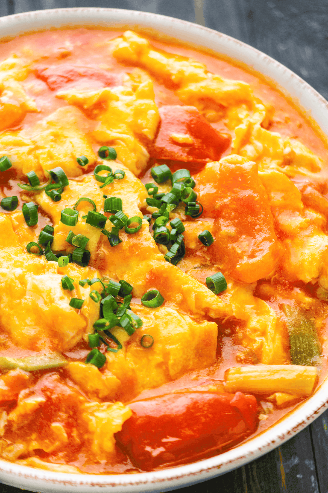

Egg and Tomatoes

Description
This is a chinese dish made with scrambled eggs and tomatoes.
It is tasty and juicy, a perfect combinaton when eaten with rice. Can be made with just sugar and salt. While other popular methods include mixing with ketchup.
The key to cooking is to cook the eggs and tomatoes separately.
Ingredients
- Eggs
- Tomatoes
- Sugar Or Ketchup (or both)
- Salt
- green onions
Steps
- Prep Food Source
- Scramble Eggs with a whisk, fork, or chopsticks and set a side
- Chop some green onions into inch lengths
- cut tomatoes into equal size shapes, not too small or too big
- Scramble eggs in a pan with oil
- Set eggs aside in a clean bowl
- Put tomatoes in pan and cover on medium to high heat for about one to two minutes
- take lid off and add half teaspoon of salt and 1 and a half teaspoons of sugar, depending on amount of eggs and tomatoes.
- add eggs immediately and begin lightly stirring the food, feel free to add some ketchup if you want
- turn off heat before tomatoes become over cooked and move it onto a plate
- enjoy!